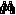

Configuración de destinos¶
Ubicación¶
| Módulo: | Real Q |
|---|---|
| Grupo: | Parámetros |
| Descripción: | Configuración de destinos |
Introducción¶
Seleccione los almacenes que pueden ser objetivo de traslado para la salida de “otros productos”
Agregue almacenes a la lista de destinos, y luego márquelos para que aparezcan en la lista de destinos posibles de traslado en el Despacho de otros productos
Agregar un nuevo destino¶
- Si no lo ha creado, `cree el almacén <>`_ que se convertirá en destino
- Ejecute la opción Configuración de destinos
- Se desplegará una grilla con los destinos antes configurados, a su lado un caja de verificación para activarlos. Si los activa, los verá en la lista en el momento de seleccionar el objetivo del traslado
- Para convertir un almacen en destino y verlo en la grilla, presione . En la lista de almacenes, seleccione alguno haciendo doble click. Luego haga click en el botón
- Una vez el destino esté en la lista, puede activarlo o desactivarlo en la casilla de verificación